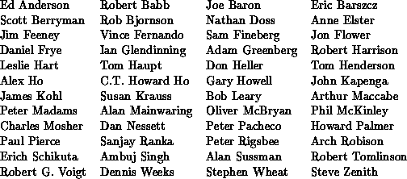

MPI: A Message-Passing Interface Standard
Message Passing Interface Forum
Version 1.1: June, 1995. Beginning in March, 1995, the Message Passing Interface Forum reconvened to
correct errors and make clarifications in the MPI document of May 5, 1994,
referred to below as Version 1.0. These discussions resulted in Version 1.1,
which is this document. The changes from Version 1.0 are minor. A version
of this document with all changes marked is available. This paragraph is an
example of a change.
Version 1.0: June, 1994. The Message Passing Interface Forum (MPIF), with participation from over
40 organizations, has been meeting since January 1993 to discuss and
define a set of library interface standards for message
passing.
MPIF is not sanctioned or supported by any official
standards organization.
The goal of the Message Passing Interface, simply stated, is to
develop a widely used
standard for writing message-passing programs.
As such the interface should
establish a practical, portable, efficient, and flexible standard
for message passing.
This is the final report, Version 1.0, of
the Message Passing Interface Forum. This document contains all the
technical features proposed for the interface. This copy of the draft
was processed by LaTeX on June 12, 1995.
Please send comments on MPI to mpi-comments@cs.utk.edu.
Your comment will be forwarded to MPIF committee members who will
attempt to respond.
(c) 1993, 1994, 1995 University of Tennessee, Knoxville, Tennessee.
Permission to copy
without fee all or part of this material is granted, provided the
University of Tennessee copyright notice and the title of this document
appear, and notice is given that copying is by permission of the
University of Tennessee.
Acknowledgments
The technical development was carried out by subgroups, whose work
was reviewed by the full committee. During the period of development of
the Message Passing Interface ( MPI), many people served in positions of
responsibility and are listed below.
- Jack Dongarra, David Walker, Conveners and Meeting Chairs
- Ewing Lusk, Bob Knighten, Minutes
- Marc Snir, William Gropp, Ewing Lusk, Point-to-Point Communications
- Al Geist, Marc Snir, Steve Otto, Collective Communications
- Steve Otto, Editor
- Rolf Hempel, Process Topologies
- Ewing Lusk, Language Binding
- William Gropp, Environmental Management
- James Cownie, Profiling
- Tony Skjellum, Lyndon Clarke, Marc Snir, Richard Littlefield, Mark Sears,
Groups, Contexts, and Communicators
- Steven Huss-Lederman, Initial Implementation Subset
The following list includes some of the active participants in
the MPI process not mentioned above.

The University of Tennessee and Oak Ridge National Laboratory
made the draft available by anonymous FTP
mail servers and were instrumental in distributing the document.
MPI operated on a very tight budget (in reality, it had no budget when
the first meeting was announced).
ARPA and NSF have supported research at various institutions
that have made a contribution towards travel for the U.S. academics.
Support for several European participants was provided by
ESPRIT.
Contents
Return to MPI 1.1 Standard Index
Return to MPI-2 Standard Index
Return to MPI Forum Home Page
MPI-1.1 of June 12, 1995
HTML Generated on August 6, 1997